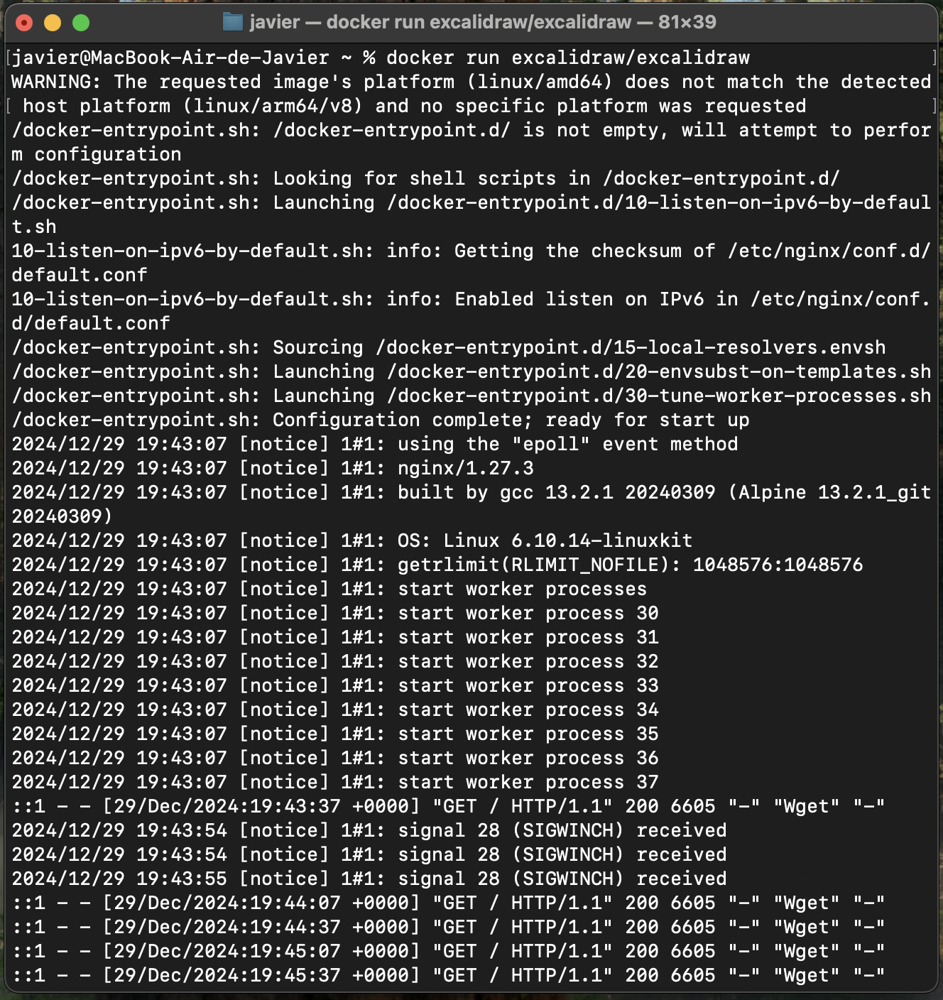
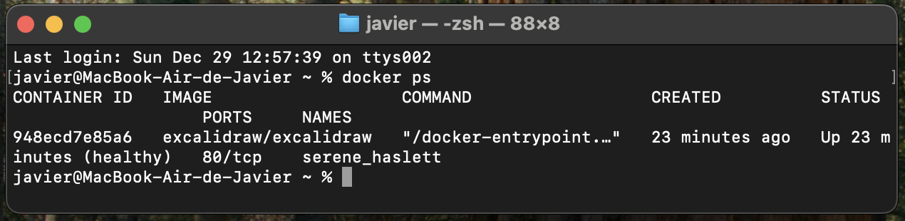
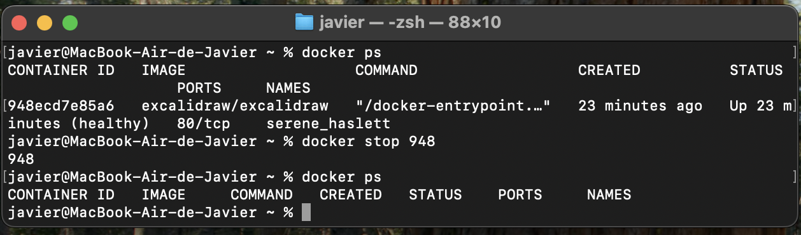
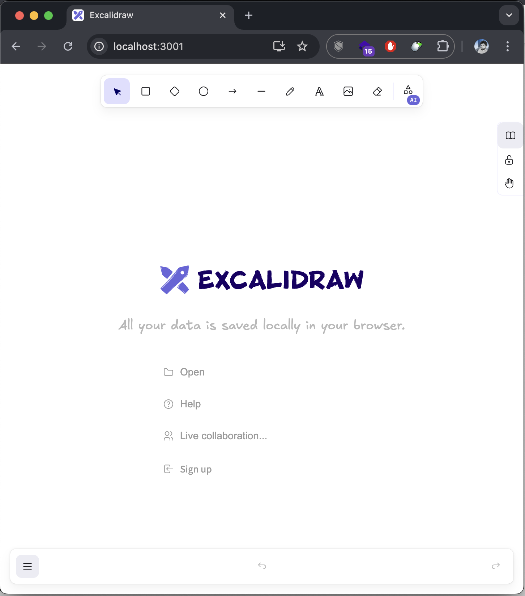
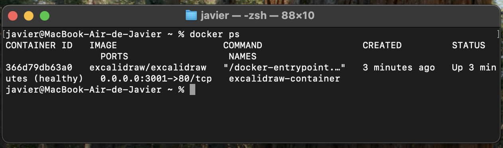
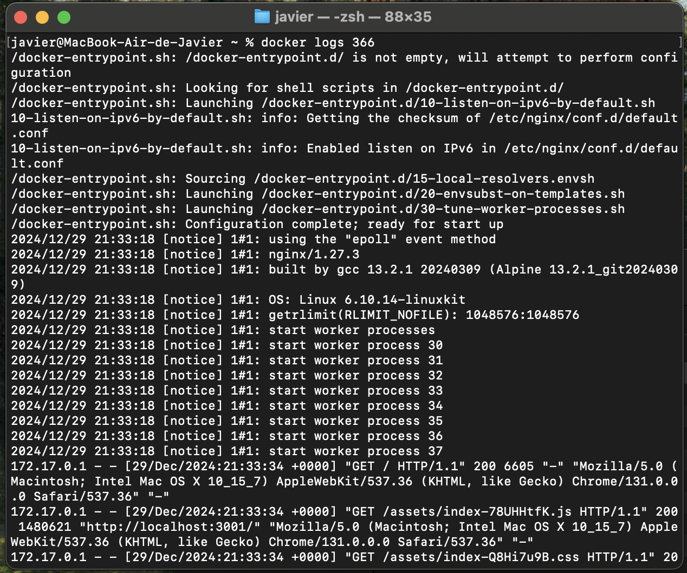

6. Contenedor de Excalidraw ✏️
My first Excalidraw container
Para comenzar a utilizar Excalidraw dentro de un contenedor, utilizamos el comando docker run. Este comando nos permite arrancar un contenedor a partir de una imagen específica. La sintaxis básica es:
docker run <imagen>En este caso vamos a usar el siguiente comando en la terminal:
docker run excalidraw/excalidrawLa ejecución del del comando te debería dejar la terminal tomada y verías algo como esto

Aunque no tengamos la imagen descargada, Docker buscará automáticamente la imagen en Docker Hub, la descargará y arrancará el contenedor.
Como ya te mencioné, la ejecución del comando run dejó tomada la terminal, ahora no puedes utilizarla. Entonces lo que haremos es abrir otra terminal y vamos a consultar los contenedores que están en ejecución, con el comando docker ps:
docker psY deberías ver el contenedor de excalidraw que está en ejecución

La información que veras sera:
CONTAINER ID: Es un identificador único generado automáticamente para cada contenedor, útil para realizar acciones específicas sobre él (como detenerlo o eliminarlo).
IMAGE: Muestra el nombre y la etiqueta (tag) de la imagen que se utilizó para crear el contenedor.
COMMAND: El comando que se está ejecutando como proceso principal del contenedor (normalmente definido en la imagen o sobreescrito al iniciar el contenedor). Ejemplo: /bin/bash.
CREATED: Indica cuánto tiempo ha pasado desde que el contenedor fue creado. Ejemplo: 3 hours ago.
STATUS: El estado actual del contenedor, que puede ser:
Up X minutes/hours/days: El contenedor está ejecutándose. Exited (code) X minutes ago: El contenedor se detuvo (con un código de salida).
PORTS: Lista los puertos que están expuestos y mapeados en el contenedor.
NAMES: El nombre asignado al contenedor, ya sea generado automáticamente o definido por el usuario al crearlo.
Si además queremos ver todos los contenedores, tanto los que están en ejecución como los que han sido detenidos, utilizamos:
docker ps -aAhora vamos a detener el contenedor que se está ejecutando, para eso en la terminal colocamos el siguiente comando
docker stop <CONTAINER ID>En este caso el ID del contenedor en ejecución es 948ecd7e85a6, por lo que el comando es docker stop 948ecd7e85a6 o también, como se muestra en la imagen que está a continuación, podemos utilizar solo los primeros 3 caracteres del ID.

Como puedes ver, cuando ejecutamos el comando docker ps ya no hay contenedores ejecutándose.
Opciones comunes con docker run
El comando docker run nos permite personalizar el comportamiento de los contenedores mediante diferentes opciones. Algunas de las más comunes son:
-d: Ejecuta el contenedor en segundo plano.-p: Mapea un puerto del host a un puerto del contenedor.--name: Asigna un nombre personalizado al contenedor.--rm: Elimina automáticamente el contenedor una vez detenido.-v: Mapea un volumen entre el host y el contenedor.-e: Define variables de entorno.
Ejemplo práctico con Excalidraw
Si queremos ejecutar Excalidraw en segundo plano y mapear un puerto para acceder a él desde el navegador, podemos hacerlo con:
docker run -d -p 3001:80 --name excalidraw-container excalidraw/excalidraw-d: Ejecuta el contenedor en segundo plano.-p 3001:80: Mapea el puerto 80 del contenedor al puerto 3001 del host, permitiendo acceder a la aplicación en http://localhost:3001.--name excalidraw-container: Asigna el nombre “excalidraw-container” al contenedor.
Con este comando, tendremos Excalidraw ejecutándose en un contenedor y accesible desde el navegador.

Con un docker pspodemos ver que el contenedor se está ejecutando y está mapeando el puerto 3001 de nuestra máquina al 80 del contenedor.

Ver logs del contenedor
Como el contenedor está en ejecución en segundo plano, podemos consultar sus logs para ver información sobre lo que está ocurriendo dentro del contenedor:
docker logs excalidraw-containerO también
docker logs <CONTAINER ID>
Si queremos seguir los logs en tiempo real:
docker logs -f excalidraw-containerPara desacoplarnos sin detener el contenedor, usamos la combinación de teclas Control + P + Q.
Política de reinicio
Si deseamos que el contenedor de Excalidraw se reinicie automáticamente en caso de fallo, podemos usar la opción --restart. Por ejemplo, para reiniciarlo siempre que sea necesario:
docker run --restart always -d -p 3001:80 excalidraw/excalidraw